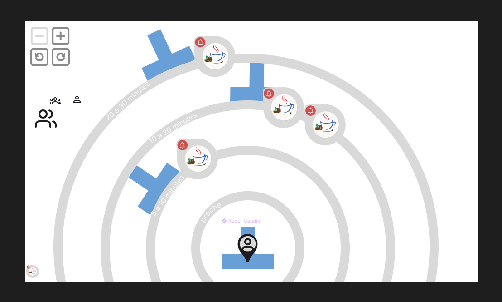
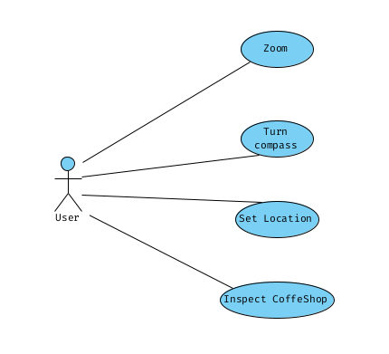

Description du projet
Exigences
Besoins fonctionnels
Besoins Non Fonctionnels
Infrastructure
Rapport d'avancement
Semaine 1 –
Ouverture de projet & Élaboration des exigences
Objectifs
- Se familiariser avec le code existant et les outils de développement
- Produire une première version de l'échéancier
- Brainstormez des idées pour capturer le concept d'évènements et activités.
Réalisations
- Familiarisation avec le code source et la documentation du projet
- Recherches effectuées sur les librairies utilisées
Notes
Semaine 2 –
Conceptualisation "Mode Boussole"
Objectifs
- Mettre sur point une maquette de l'interface basée sur le dessin original
- Tester le docker container du projet pour l'instanciation locale.
Réalisations
- J'ai produit une maquette sur Figma assez simple sans transition ou animation mais les idées sont bien comprises
- Après feedback, j'ai vu où des améliorations et des généralisations peuvent être ajoutées à la maquette
Notes
Pour l'instanciation locale il me manquait l'API key dans les environment variables
Semaine 3 –
Conceptualisation "Mode Boussole"
Objectifs
- Améliorer la maquette de l'interface
- Produire les cas d'utilisation du mode boussole (peut-être aussi diagramme de séquences)
- Brainstormer des idées pour les concepts évènements et activités.
Réalisations
- Simplification des options de contrôle de l'interface (simple maintenant, expansion possible plus tard si possible)
- Idée: tourner la boussole avec un "clic-and-drag" qui se traduira très bien à la plateforme mobile 
- Cas d'utilisation compléter, diagramme non nécessaire.
- Évènements seront assortis en ordre de pertinence sur la page d'accueil à côté des cafés. La section pourra être élargie pour donner une vue de tous les évènements sur un calendrier. Un utilisateur peut indiquer sa présence à un évènement ou le "supporter", ces deux actions influençant le score de pertinence de cet évènements. Sur la page d'un café, que les évènements de ce café seront visibles. Les infos d'un évènement devraient être dans les metadatas du lien de partage.
Notes
Quand un utilisateur affirme sa présence, son profil sera placé dans la liste des participants. On brainstormera comment implémenter des connections entre les utilisateurs qui se connaissent sans trop donner l'impression d'un réseau social.
Semaine 4 –
Prototype fonctionnel
Objectifs
- Prototypage de l'interface mode boussole en React
- Brainstormer la façon optimal d'évaluer le niveau d'activité d'un café et les connections entre utilisateurs qui se connaissent.
Réalisations
- Setup d'un environnement séparé pour prototyper la boussole
- Implémentation des boutons de contrôle (zoom et rotate)
Notes
Il n'y pas eu beaucoup de progrès cette semaine malheureusement. Mais après discussion sur mes idées d'implémentation, mon superviseur a suggéré d'utiliser des SVG au lieu de divs pour créer le visuel de la boussole et m'a présenté la librairie javascript D3.
Semaine 5 –
Progression Boussole
Objectifs
- Continuer le développement du prototype
Réalisations
- Le placement, zoom et rotation des "échelons" en SVG pure ont été réussi
- Collection des coordonnées (longitudes et latitudes) des campus dont fait référence la page d'accueil du siteweb afin de pouvoir prototyper le placement de ces 'landmarks' dans l'interface boussole
- Fonctions permettant la conversion des coordonnées en coordonnées polaires avec normalisation
- Tentative de séparer les controles dans un fonction component. Cependant j'ai rencontré une erreur curieuse. À revoir
Notes
Ayant courtement feulleté la documentation de SVG et D3, je m'étais dit que D3 était peut-être trop extensif pour nos besoins et que je pourrais implémenter qu'avec des components React et des SVG. Mais après avoir rencontré des difficulté avec le rendering cette semaine, je crois qu'il faudra faire appel à D3
Semaine 6 –
Pause - Examens Intra
Objectifs
- Pause sur le projet accordé pour me concentrer sur mes examens
Semaine 7 –
Switch à D3
Objectifs
- Intégré D3 dans l'interface Boussole
Réalisations
- Placement des 'landmark' sur les échelons de la boussole
- Méthode pour l'obtention de la localisation live de l'utilisateur
- Méthode pour l'obtention de l'orientation de l'appareil de l'utilisateur (heading). Pourtant mon navigateur marque cette fonctionnalité comme étant depricated. À revoir
Notes
Quelques artifactes graphique ce sont produits dans cet implémentation. Je me suis beaucoup inspiré de l'exemple Polar Clock sur le site de D3 et il y a surement quelque chose qui m'échappe. En plus de ça je n'arrive pas encore à tourner la boussole et de plus je suis un peu méfiant de l'orientation actuelle des 'landmark'. Vu comment je trouve cet implémentation compliqué, j'aimerais dorénavant travailler sur la boussole en parallèle avec Évènement et Activité. Peut-être avec un peu de recul j'y parviendrais.
Semaine 8 –
Familiarisation avec Event
Objectifs
- Etude du modele dans l'api: analyse de la structure de l’objet Event, des champs existants (titre, description, date, etc.) et des limitations initiales du modèle.
- Etude des outils de communication frontend-backend: fonctionnement des appels REST et des mécanismes d’authentification et de validation des requêtes.
- Etude des maquettes existantes: analyse des prototypes visuels d’interfaces de création et de visualisation d’événements, afin d’évaluer leur faisabilité et leur adéquation avec les besoins du projet.
Réalisations
- Le modèle d’événement initial ne disposait pas d’un endpoint complet pour
/events/{id}, ce qui limitait la consultation détaillée d’un événement individuel via l’API. - La base de code frontend contient un module JavaScript nommé
EventAPI, centralisant l’ensemble des requêtes vers l’API en lien avec les événements (création, édition, récupération, etc.).
Semaine 9 –
EventBoard
Objectifs
- Ajout de l’affichage des événements récents sur la page d’accueil, afin d’en améliorer la visibilité et encourager l’engagement utilisateur dès l’arrivée sur la plateforme.
- Création d’un objet visualisateur d’événement, responsable de la présentation synthétique et interactive de chaque événement dans les différentes sections de l’interface.
Réalisations
- Création des composants
EventBoardetEventCard, inspirés deCafeListetCafeCard, pour structurer l’affichage des événements sous forme de grille. - Le composant
EventCarda été conçu de manière extensible, facilitant l’ajout futur de boutons d’interaction ou d’éléments contextuels sans restructuration majeure.
Semaine 10 –
Édition d'événements pt 1
Objectifs
- Implémentation du composant
EditEvent, servant d’interface principale pour la création et la modification d’événements via un formulaire dynamique. - Refactorisation du composant afin qu’il puisse être utilisé à la fois pour la création d’un nouvel événement et l’édition d’un événement existant, en fonction des paramètres fournis.
Réalisations
- Un changement de configuration de mon poste de travail a entraîné un ralentissement temporaire du développement cette semaine. Ce problème technique, lié à mon environnement local, a affecté la fluidité de mes itérations jusqu’à ce que mon superviseur m’apporte son aide pour le résoudre efficacement.
Semaine 11 –
Édition d'évènements pt 2
Objectifs
- Implémentation du composant
EditEvent, permettant à un utilisateur de créer ou modifier un événement via un formulaire complet et réactif. - Conception d’une maquette pour la page dédiée à un événement, présentant ses détails, ses interactions possibles, ainsi que les liens vers son café associé ou ses éditeurs.
Réalisations
- Le composant
EditEventintègre une vérification de l’authentification de l’utilisateur, afin de restreindre l’accès à la création ou à l’édition d’événements aux seuls utilisateurs connectés. - Correction de bugs visuels présents dans le composant
Inputexistant, améliorant ainsi la cohérence de l’interface et la lisibilité des formulaires.
Notes
Une page dédiée à un événement reste nécessaire pour permettre le partage externe via une URL, mais son intégration dans la plateforme peut sembler lourde. Une solution plus fluide serait d’afficher l’événement dans un popup après un clic sur une carte, tout en conservant un lien direct permettant d’ouvrir ce popup depuis l’extérieur.
Semaine 12 –
Interactions
Objectifs
- Ajout de nouvelles fonctionnalités au composant
EventCard, incluant les interactions utilisateur (participer, soutenir), un accès rapide à l’édition pour les éditeurs, et un bouton “voir plus” menant à la vue détaillée de l’événement. - Correction de plusieurs bugs liés à
EventCard, notamment des problèmes d’affichage conditionnel et de réactivité sur différents formats d’écran.
Réalisations
- Prototypage d’une fonctionnalité sur
EventCardpermettant à l’utilisateur, s’il est éditeur, d’accéder rapidement à un formulaire d’édition directement depuis la page d’accueil, sans changer de vue.
Notes
Pour améliorer l’édition rapide, un redesign de EventCard serait nécessaire afin de mieux l’intégrer. Cela permettrait aussi d’ajouter une vue “voir plus” personnalisée, absente de CafeCard, et d’offrir une apparence distincte entre cafés et événements pour une meilleure expérience utilisateur.
Semaine 13 –
Éditeurs
Objectifs
- Ajout de la fonctionnalité d’éditeurs au modèle
Event, permettant à plusieurs utilisateurs de collaborer sur la création et la gestion d’un même événement. - Ajout de nouveaux attributs au modèle
Eventdans le backend, incluant la liste des éditeurs, la capacité maximale de participants, un lien de billetterie et un prix de base pour les événements tarifés.
Réalisations
- Ajout de nouveaux champs au modèle
Event: éditeurs, lien vers une billetterie en ligne et nombre maximal de supporteurs souhaités, afin de mieux répondre aux besoins d’organisation et de gestion. - Implémentation d’une section “Éditeurs” dans l’interface de création et de modification d’un événement, permettant d’ajouter des collaborateurs au projet de manière intuitive.
Semaine 14 –
Publications
Objectifs
- Ajout de la fonctionnalité de publication dans le composant
EditEvent, permettant aux utilisateurs de soumettre leur événement à un café pour approbation. - Implémentation du modèle
Publicationdans le backend, incluant les champsevent_id,cafe_idetstatus, afin de gérer les demandes de publication avec validation par les cafés.
Réalisations
- Implémentation d’une section “Publications” dans l’interface d’édition d’événement, permettant de visualiser l’état des demandes de publication auprès des cafés et de suivre leur approbation ou refus.
- Refactorisation du composant
EventInteractionpour en améliorer la clarté, la maintenabilité et faciliter sa réutilisation dans d’autres contextes de la plateforme.
Semaine 15 –
Examens et rédaction rapport
Objectifs
- Cette semaine et la suivante sont consacrées à la rédaction de mon rapport final ainsi qu’à la préparation et la tenue de mes examens de fin de trimestre.